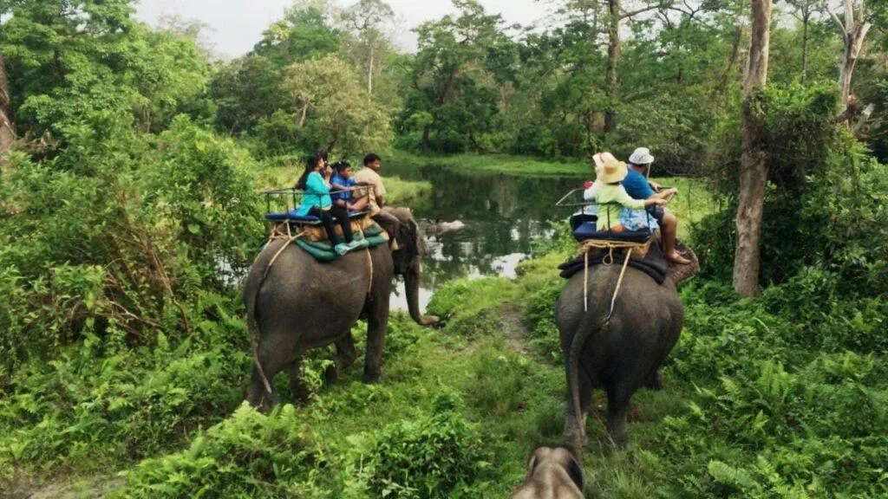
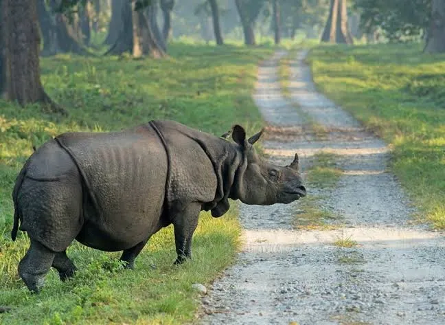
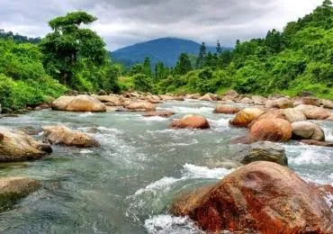
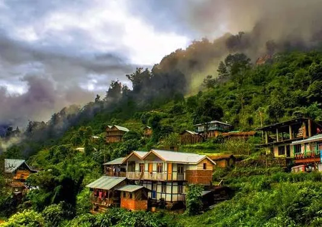
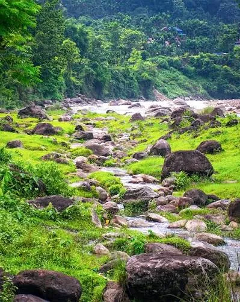

Dooars · −14%
DOOARS TOUR PACKAGE – 3N/4D
Dooars - The Gateway to Wildlife
Overview
Discover the enchanting beauty of Dooars, a paradise of dense forests, sprawling tea gardens, winding rivers and the majestic Himalayan foothills. This exciting tour takes you through the region’s most beautiful and wildlife-rich destinations, including Gorumara National Park, Jaldapara National Park, Chilapata Forest, Buxa Tiger Reserve, Murti and Jainti. Experience thrilling jungle safaris and get the opportunity to spot fascinating wildlife such as the one-horned rhinoceros, elephants, deer and a variety of colourful birds in their natural surroundings. Enjoy the peaceful beauty of the Murti and Jainti rivers, scenic forest roads, lush tea estates and charming local villages. With a perfect combination of wildlife, nature, adventure, scenic landscapes and relaxation, the Dooars tour is an ideal escape for families, couples, nature lovers, photographers and adventure enthusiasts looking to experience the untouched beauty of North Bengal.
Journey highlights
- Jungle Safari
- One-Horned Rhino Spotting
- Gorumara National Park Jaldapara National Park
- Chilapata Forest
- Buxa Tiger Reserve
- Murti River
- Jainti River
- Tea Garden Visit
- Birdwatching
- Wildlife & Nature Photography
- Himalayan Foothill Views
Day by day
The itinerary
-
Day 1
IXB/NJP – DOOARS / LATAGURI TRANSFER
Arrive at Bagdogra Airport (IXB) / NJP Railway Station and proceed towards the beautiful Dooars, surrounded by dense forests, tea gardens and Himalayan foothills. On arrival at Lataguri, check in to your resort and relax. Later, enjoy the peaceful surroundings of Murti River and explore the nearby forest area.
IXB/NJP Pickup | Dooars Forests | Tea Gardens | Murti River | Resort Stay
-
Day 2
GORUMARA NATIONAL PARK JUNGLE SAFARI & SIGHTSEEING
Start the day with an exciting Gorumara National Park jungle safari, where you can experience the rich wildlife and beautiful forest landscape of Dooars. Keep an eye out for Indian rhinoceros, elephants, deer and various species of birds. Later, explore nearby attractions and enjoy the peaceful forest atmosphere before returning to the resort.
Jungle Safari | Rhino Spotting | Wildlife | Birdwatching | Dense Forests | Nature Photography
-
Day 3
LATAGURI – JALDAPARA / CHILAPATA – DOOARS SIGHTSEEING | 3N DOOARS
After breakfast, proceed towards Jaldapara/Chilapata through scenic tea gardens and forest roads. Enjoy the natural beauty of the Dooars and, subject to availability, experience a thrilling Jungle Safari in Jaldapara National Park, famous for its one-horned rhinoceros and elephants. You can also explore the Chilapata Forest and nearby tribal villages for a glimpse of local life and culture
Jaldapara National Park | Elephant & Wildlife Viewing | Chilapata Forest | Tea Gardens | Local Village Experience | Wildlife Photography
-
Day 4
DOOARS – BUXA / JAINTI – IXB/NJP DEPARTURE
After breakfast, explore the beautiful Buxa–Jainti region before beginning your return journey. Enjoy the spectacular forest scenery, mountain landscapes and the peaceful Jainti River. Later, proceed towards Bagdogra Airport/NJP Railway Station for your onward journey, taking home unforgettable memories of the forests and wildlife of Dooars.
Buxa Forest | Himalayan Foothills | Jainti River | Scenic Views | IXB/NJP Drop
Included
- Reserved vehicle for Transfer & Sightseeing All sightseeing as per the Tour Itinerary Nights stay in Hotel Accommodation in Hotel. What's Excluded
- Any personal expenses All Taxes and Permits etc. for Darjeeling Sikkim & Bhutan Any other not mentioned in includes Para.
Not included
- Any personal expenses All Taxes and Permits etc. for Darjeeling Sikkim & Bhutan Any other not mentioned in includes Para.
Gallery
Scenes from the route





Reserve this journey